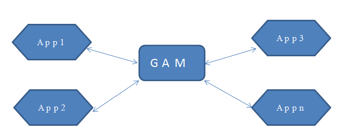

This is a common scenario, where one GAM database will be used by different applications. In deployment time also, for example using GXserver, it will happen that the same GAM database will need to be referenced in each local copy of the knowledge base.  Connecting to an existing external GAM repository from GeneXusIf you want to connect to an existing repository, and not to create a new one, you need to do the following: 1. Specify the corresponding Repository ID Environment property. 2. In the GAM data store properties you need to specify the corresponding database name, user name and password in order to connect to the database. 3. Specify Administrator User Name, Administrator User Password, of this GAM repository you want to connect to. 4. You need to specify also Connection User Name and Connection User Password Property. It´s recommended in case of multiple applications connecting to the same GAM, After following those steps when the "Build All" is done, GeneXus detects that this repository (with the connection properties associated to it) is a valid GAM repository (with a valid GAM repository connection) so it´s no need to create a new GAM database, neither try to make reorganizations to this database. See alsoGAM Repository Connections |
| Backlinks | ||
| GAM Authentication Scenarios | GAM Repository Connections | GeneXus Administration of GAM Repository |